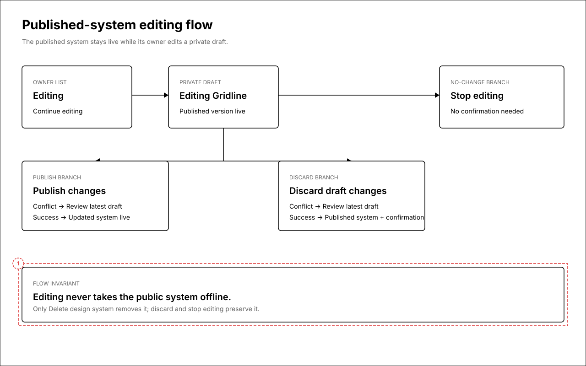
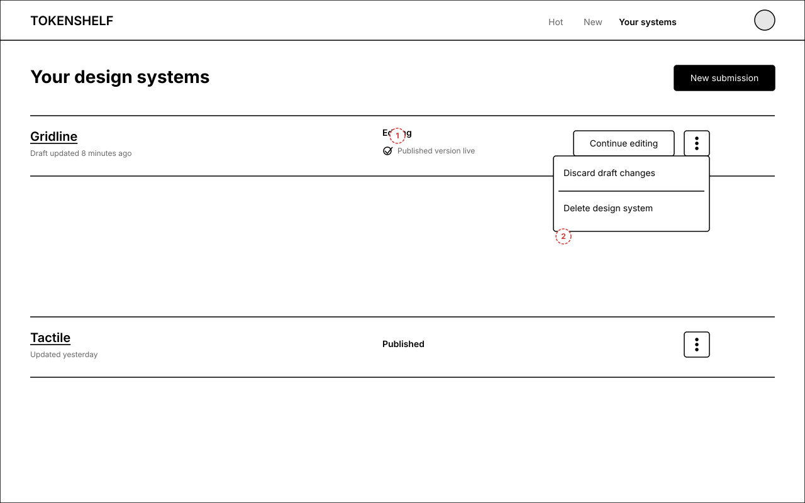
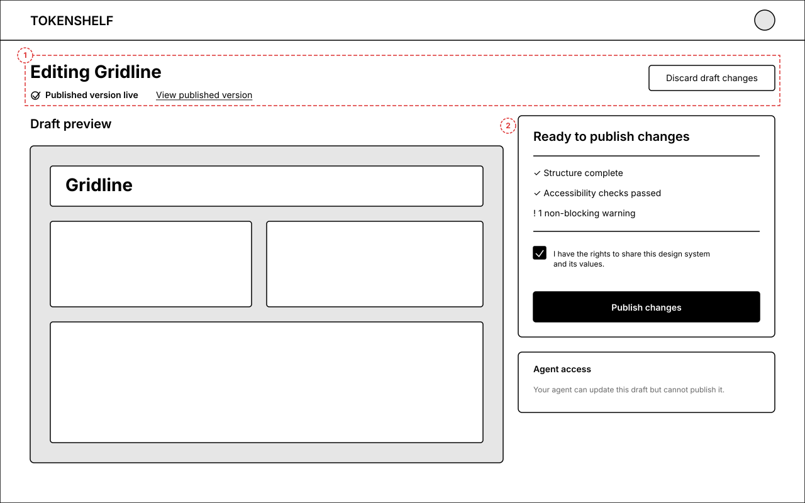
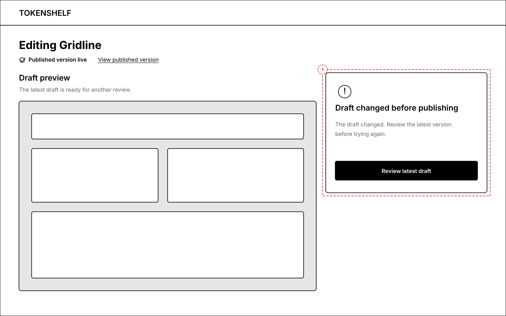
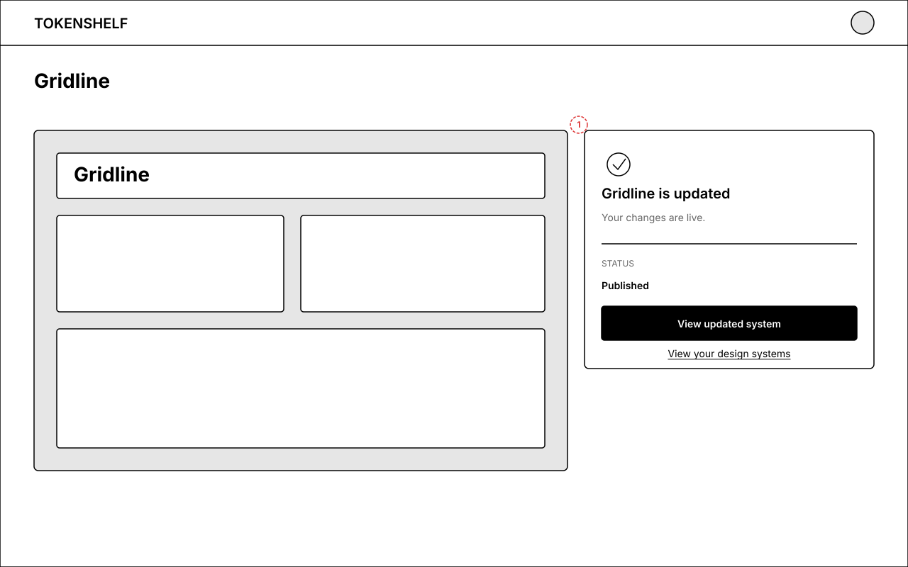
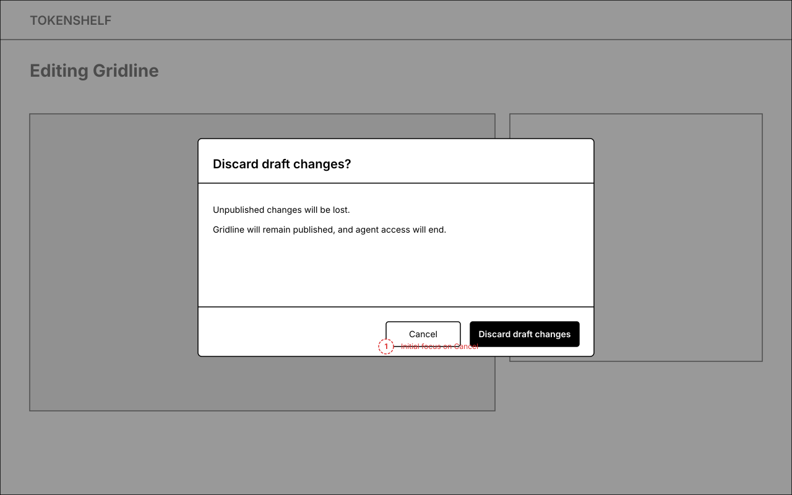
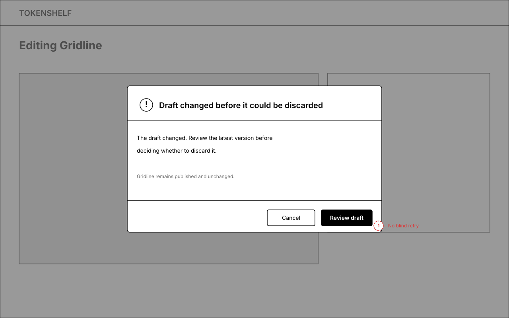
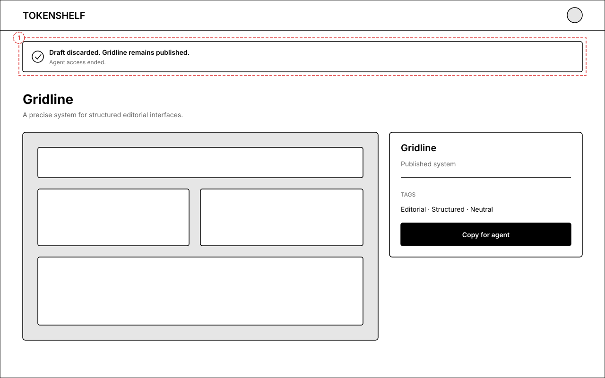
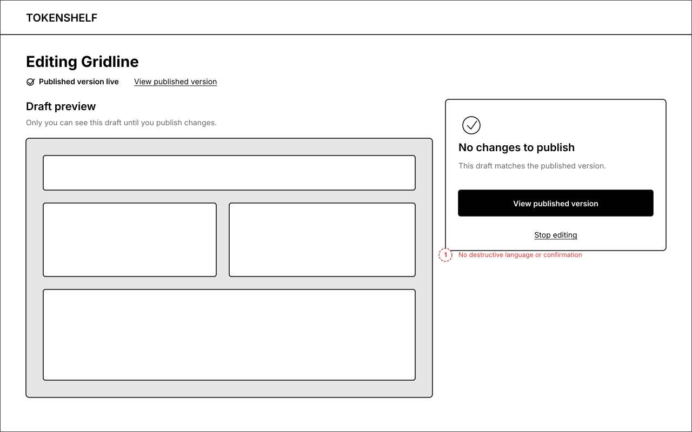
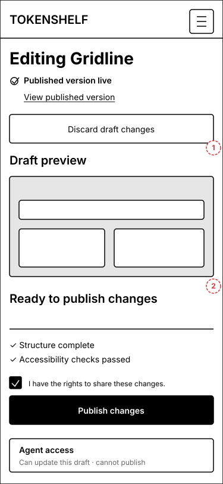

Published-system editing
A low-fidelity review of entering an edit, publishing changes, discarding a draft, resolving conflicts, and stopping an unchanged edit while the current system remains live.
One private draft, three exits
Publishing updates the live system, discarding preserves the existing system, and an unchanged draft can stop editing without destructive confirmation.

Owner list
The row exposes the dual state clearly: a private edit exists while the published system remains live.

Editing workspace
The existing preview-left and sticky-sidebar-right layout gains one persistent editing context and draft-specific labels.

Publish conflict
A durable conflict replaces stale controls and requires reviewing the latest draft before another attempt.

Publish success
The existing published state replaces editing controls and offers the updated system as the primary destination.

Discard confirmation
The dialog names what will be lost, what will survive, and what happens to agent access.

Discard conflict
If the draft changes while the dialog is open, the owner must review it rather than blindly retrying.

Discard success
Discard returns directly to the published system with a persistent inline confirmation.

Stop editing
When the draft matches the published system, destructive language and confirmation disappear.

Review before publishing
The mobile reading order keeps context first, then the draft, validation, publishing, and agent access.

UX guarantees retained
- Draft and published states remain visibly distinct throughout editing.
- Publish, discard, stop editing, and permanent deletion keep distinct labels and consequences.
- Publish and discard conflicts require review instead of retrying unseen changes.
- Discard and stop editing explicitly end agent access.
- Publish success remains inline; discard returns directly to the surviving published system.
- No-change editing ends without destructive language or confirmation.
- Focus moves to headings, conflicts, previews, and safe dialog actions as defined in the UX analysis.
- Mobile keeps review before publish, with no sticky action bar or added animation.